Find out why your PC crashes, and clean up what it no longer needs.
ReforgePulse reads the records Windows already keeps, such as event logs, hardware error reports, crash dumps and sensor readings, and explains what it finds in plain language. Nothing on your PC is changed until you have seen exactly what will happen and agreed to it.
Event logs, last 30 days
One scan
- Unexpected restarts
- 2
- WHEA errors
- 6
- Display driver resets
- 3
- Health
- 87/ 100
Everything in one window
The overview shows a health score, the issues that deserve your attention and the current load on the processor, graphics card and memory. Every other part of the app is a click away.
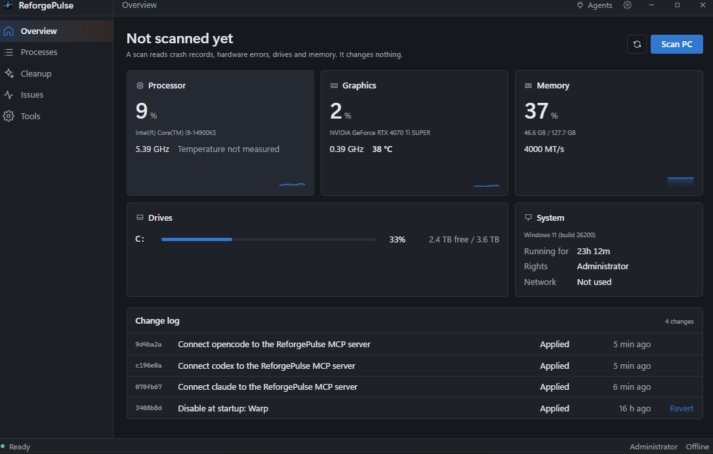
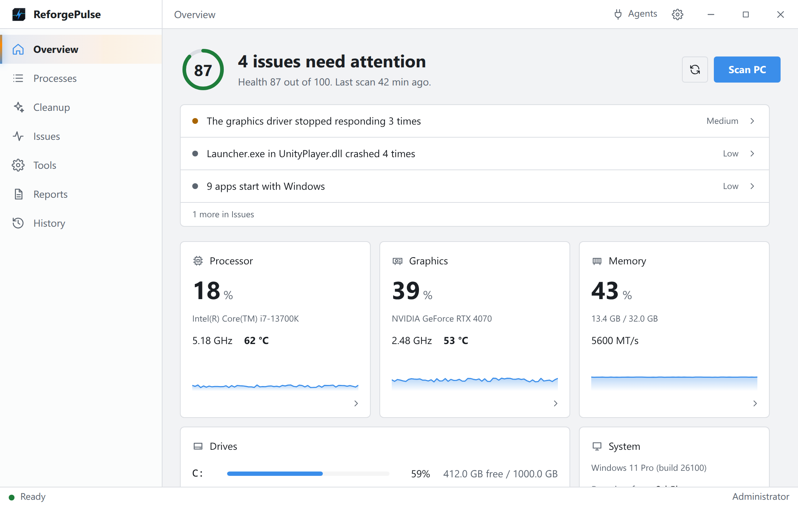
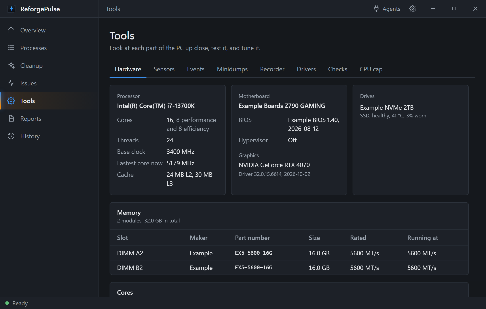
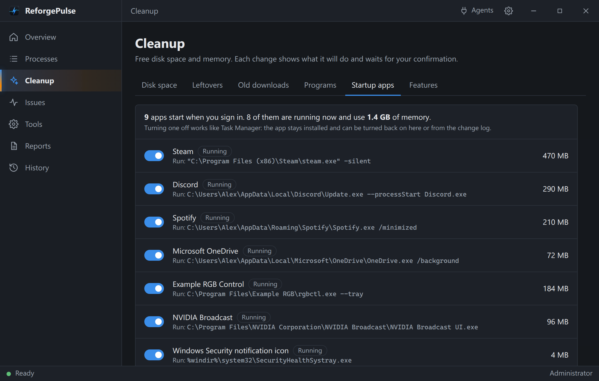
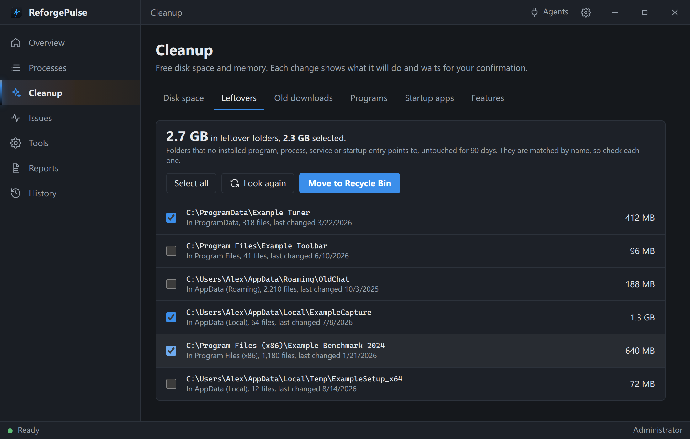
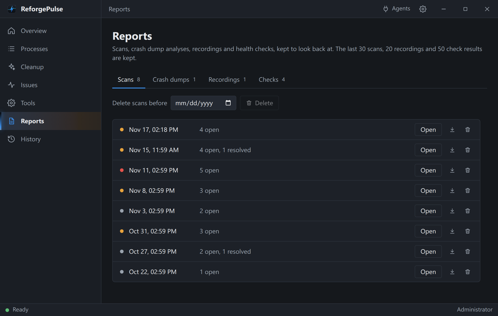
The health score, open issues and live load at a glance.
Screenshots show a made-up PC.
What it does
ReforgePulse works with the information Windows already records. When Windows cannot measure something, ReforgePulse tells you so rather than reporting that all is well.
Crashes and restarts
It reviews the last 30 days of crashes (WER 1001), unexpected restarts (Kernel-Power 41), hardware errors (WHEA), graphics driver resets (4101), disk errors and devices without drivers.
When a PC is unstable, it weighs each possible cause, such as the processor, memory, storage, heat, power, drivers or software, against the evidence for and against it.
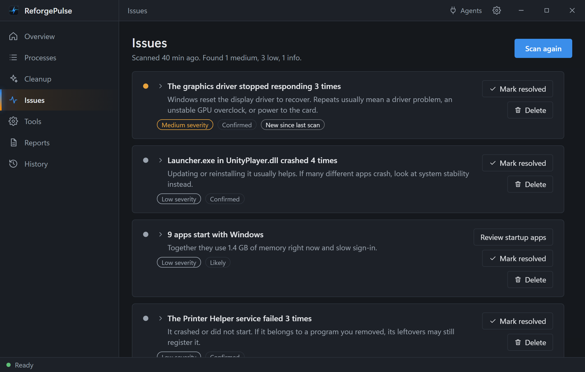
Cleanup
It finds temporary files, browser and app caches, leftover Windows Update files, folders left behind by programs you have removed, downloads you have not opened in 180 days and programs you have not used in 90 days.
It can also stop apps from starting with Windows. Old downloads and leftover folders go to the Recycle Bin, so you can still get them back.
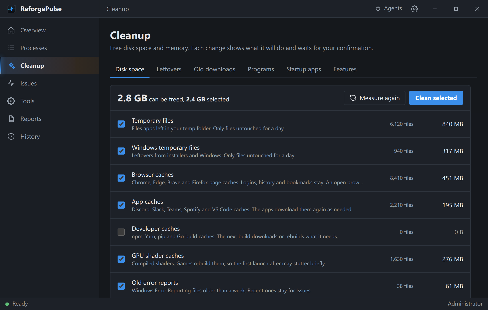
Processes
See every running program grouped under the one that started it, with its processor, graphics and memory use and any network ports it holds.
To find the program that uses a port, type it into the search box, for example :8080. Windows' own processes are protected from End task.
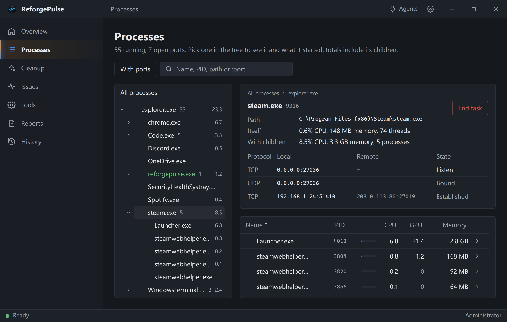
Hardware and sensors
Details of the motherboard, BIOS, memory modules, graphics card and drives, along with live temperatures, clocks, power and fan speeds and the highest value seen for each.
Each logical processor is listed with its live speed, so a hardware error that names APIC 32 is shown as logical processor 8, performance core 4. A core test checks the cores one at a time.
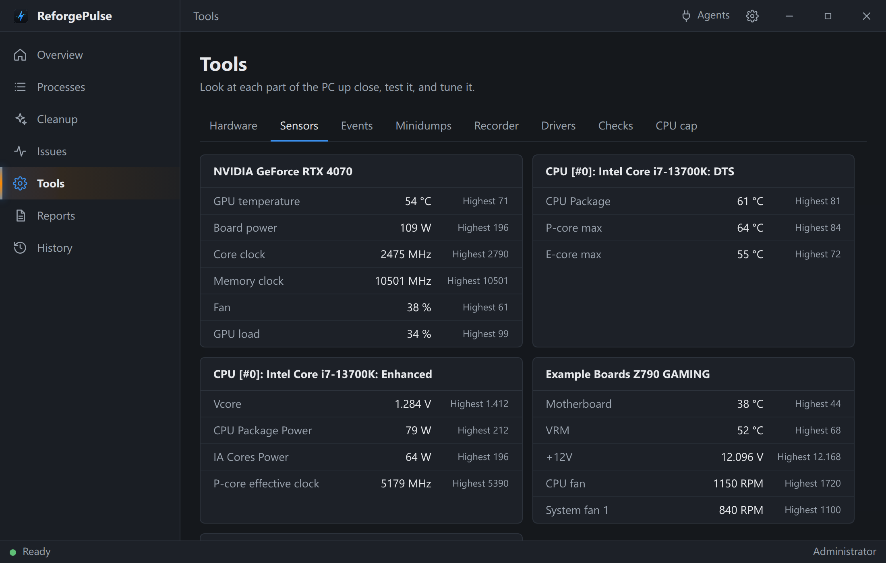
Change log
Every change is recorded before and after it is made. Where a change can be undone, the log offers a Revert button, and the revert is recorded as a change of its own.
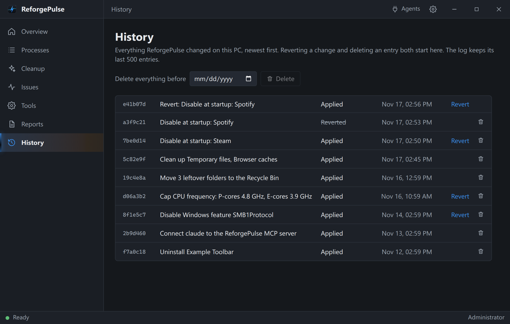
Coding agents
ReforgePulse includes a read-only MCP server for Claude Code, Codex and OpenCode. Connect one from the Agents panel and see each tool it called.
Agents can run a scan and read the results, but any change still has to be approved by you in the ReforgePulse window.
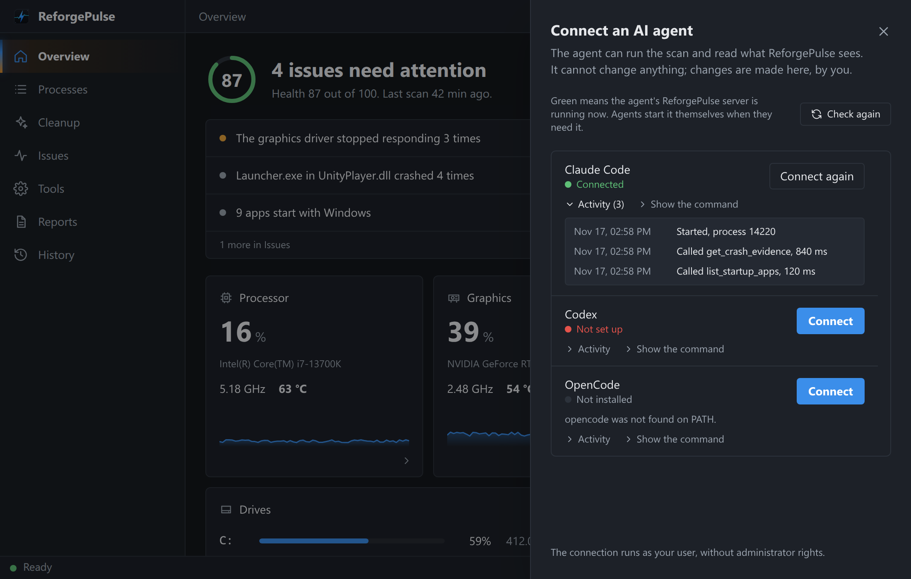
How it works
Five steps, from installing the app to undoing a change. Select a step to view it, or let the demo play.
Windows protected your PC
Windows stopped an app it does not recognise from starting.
More info
Appreforgepulse-windows-amd64-installer.exe
PublisherUnknown publisher
Run anyway
Don't run
Installed in C:\Program Files\ReforgePulse. It asks for administrator rights at each start.
87
4 issues need attention
Health 87 out of 100. Saved as a report.
- Stop errors, none found
- Unexpected restarts, 2 found
- WHEA errors, 6 corrected
- Display driver resets, 3 found
- App and service failures, 2 found
- Devices without drivers, none
The graphics driver stopped responding 3 timesMedium
DriversLikely
PowerPossible
MemoryNo evidence
HeatUnmeasured
Unmeasured means Windows cannot measure it on this PC. It does not mean everything is fine.
Launcher.exe in UnityPlayer.dll crashed 4 timesLow
9 apps start with WindowsLow
Cleanup
- Temporary filesWindows and app temp folders1.2 GB
- Shader cachesRebuilt by games as needed640 MB
- Windows Update leftoversDownloaded updates already installed410 MB
- Old downloadsUntouched for 180 days, to the Recycle Bin180 MB
2.4 GB selected
Clean up
Cleaned up 2.4 GB. The change is in History.
History
c02b77e
Spotify starts with Windows againRevert of a3f9c21, just now
a3f9c21
Spotify no longer starts with WindowsStartup apps, 2 min ago
RevertReverted
7be0d14
Cleaned up 2.4 GBCleanup, 5 min ago
19c4e8a
Processor top speed set to 4800 MHz on every power planCPU cap, yesterday
Revert
Step 1 of 5
Ask your coding agent
Open Agents in the ReforgePulse window and choose Claude Code, Codex or OpenCode, or register the server yourself with a single command. The server runs without administrator rights and can only read.
You can then ask questions in plain language, such as why the PC restarted, what is using the memory or which programs left folders behind.
Terminal
> claude mcp add --scope user reforgepulse -- "C:\Program Files\ReforgePulse\reforgepulse.exe" mcp
Added stdio MCP server reforgepulse to user config
Why did my PC restart last night?
reforgepulse: get_crash_evidence
There was one unexpected restart at 02:14 (Kernel-Power 41). No crash was recorded before it and no dump was written. A restart like this usually points to power or heat rather than a driver. The CPU temperature is not measured on this PC. If you run HWiNFO with shared memory enabled and scan again, it will be included.
Install
Download the installer from the latest release and run it. ReforgePulse keeps itself up to date. It asks before downloading an update and verifies every download against the checksums published with the release.
Download
The installer places ReforgePulse in Program Files and adds it to the Start menu.
- Requires 64-bit Windows.
- Asks for administrator rights each time it starts, because it reads hardware details and system logs.
- Stores its data in
%LOCALAPPDATA%\ReforgePulse.
Check the download
The app is not yet code-signed. To confirm that the file is exactly the one that was published, compare its hash with the value in the release's SHA256SUMS file.
certutil -hashfile reforgepulse-windows-amd64-installer.exe SHA256
When Windows reports that it protected your PC, select More info, then Run anyway.